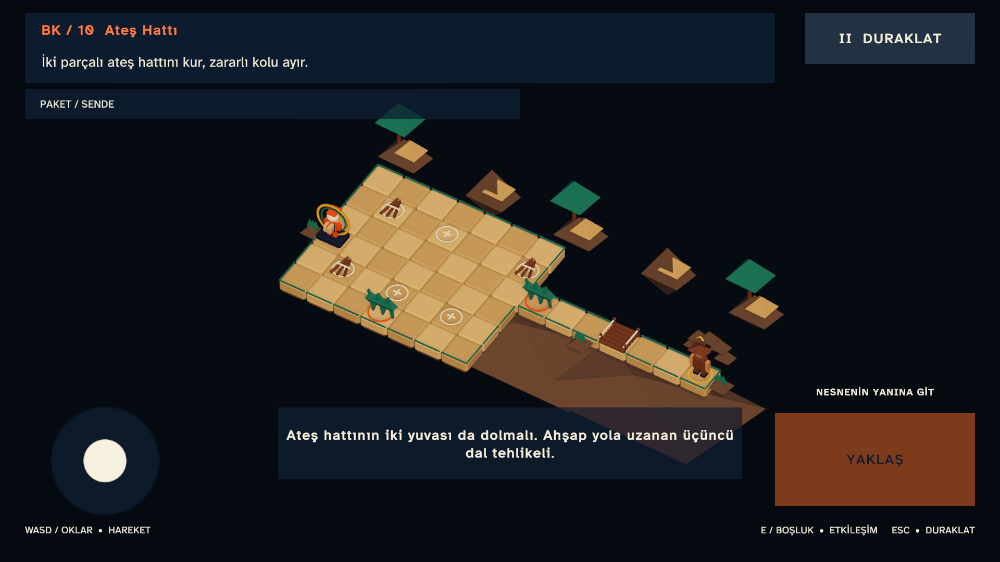
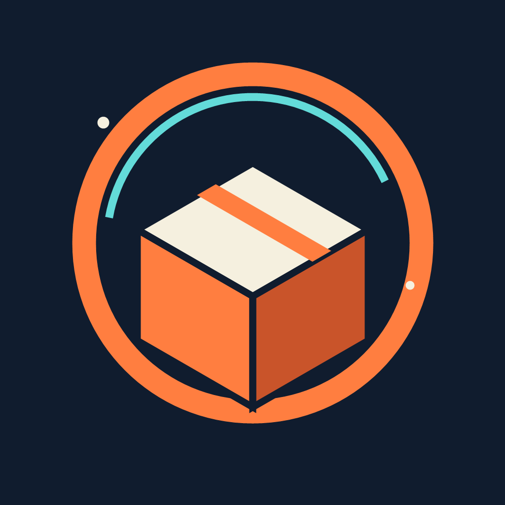
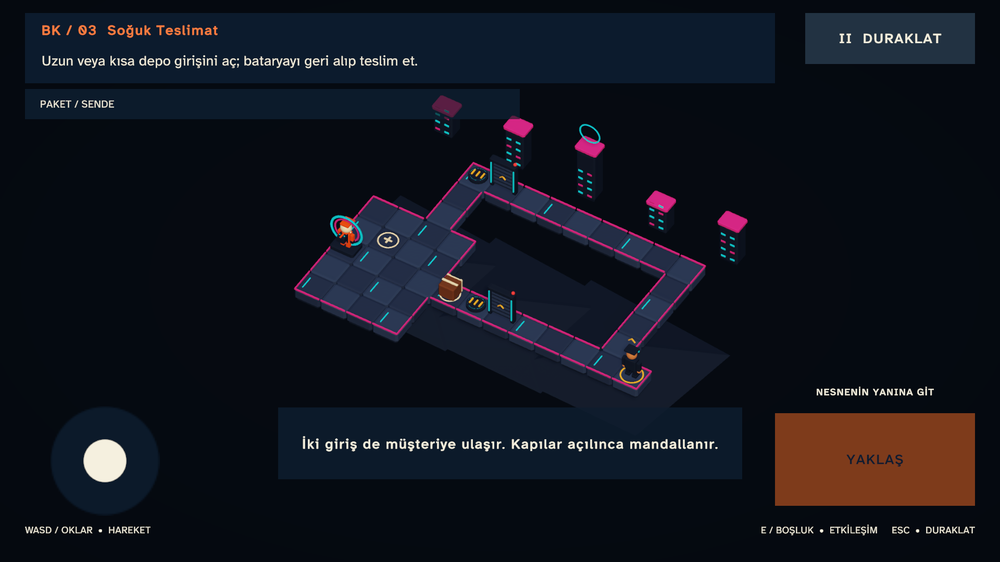
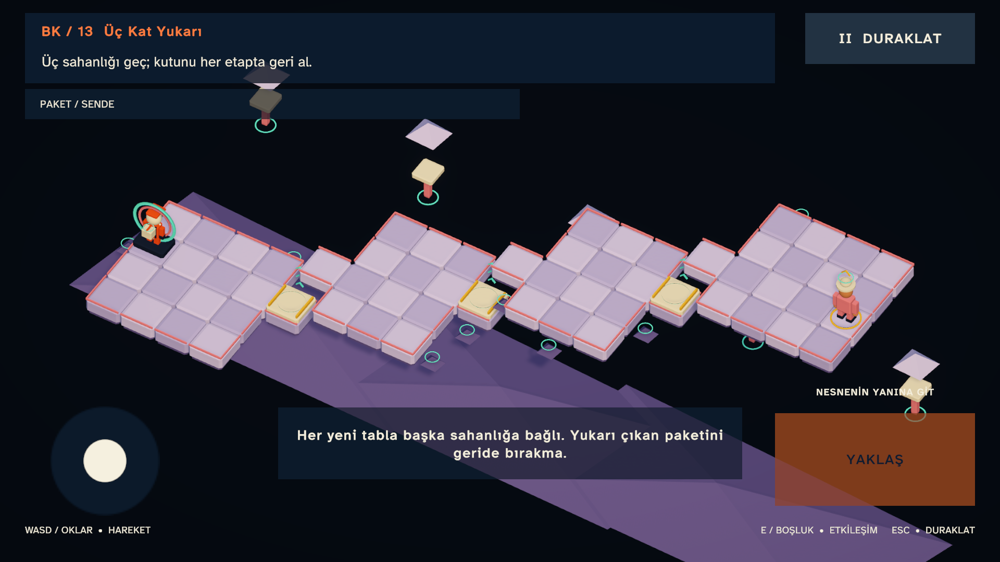
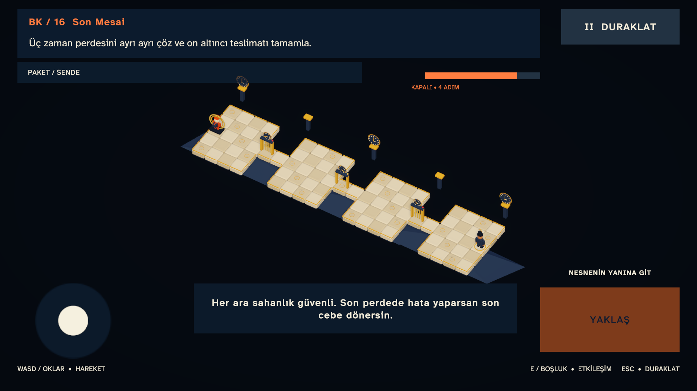

01 / TAŞ DEVRİÖnce bağlantıyı kes.
Ateşi doğru yere taşı. Teslimata giden köprüyü yakma.

BOYUT KARGODODA / VARDİYA 1.1Mağara adamının ateşi yok. Mafyanın bataryası bitmiş. Tavan katındaki komşu gerçekten tavanda. Hepsinin kargosu sende.
Ücretsiz · Türkçe · Çevrimdışı · Tek oyunculu

Paketi yalnızca taşıma.
Yolu açmak için kullan.

01 / TAŞ DEVRİAteşi doğru yere taşı. Teslimata giden köprüyü yakma.

03 / TERSKÖŞE CUMHURİYETİYerçekimi kutusuyla yüksel. Paketi yukarıda unutma.

04 / MESAİ DIŞI ZAMANDur, gözlemle. Güvenli alanda yürüyerek geçişin doğru anını bul.
Windows Arşivi bir klasöre çıkar ve BoyutKargo.exe dosyasını aç. Hareket WASD veya yön tuşları; etkileşim E veya boşluk.
Android Android 8 ve üzeri, ARM64 cihazlar. APK'yı indirip kur. Ekrandaki joystick ve etkileşim düğmesini kullan.
Görüntü ve kayıt Ayarlardan düşük, dengeli veya yüksek kaliteyi seç. Tamamlanan siparişler cihazında saklanır; yarım kalan bölüm baştan başlar.
Android fiziksel cihaz testleri henüz tamamlanmadı. Bu APK, Google Play mağaza sürümü değildir. Sürüm notları ve doğrulama durumu →